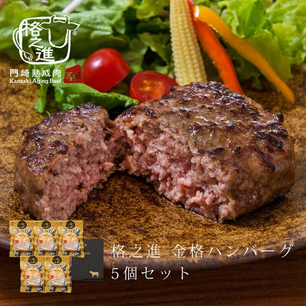
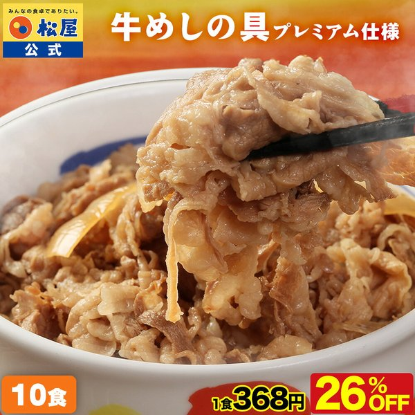
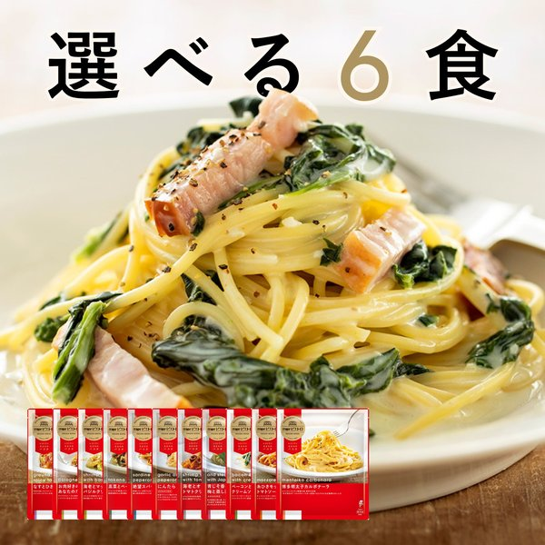
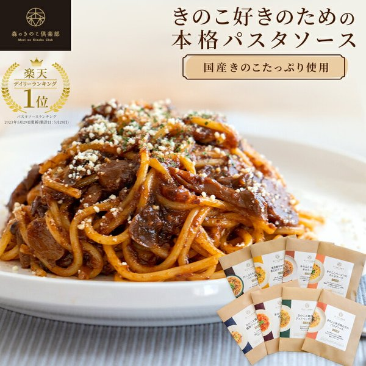
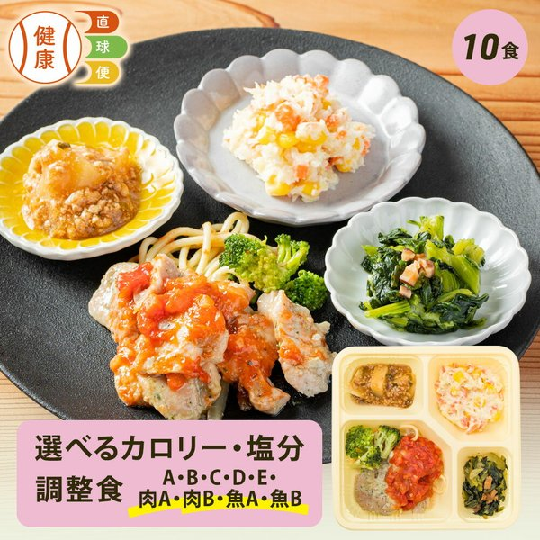
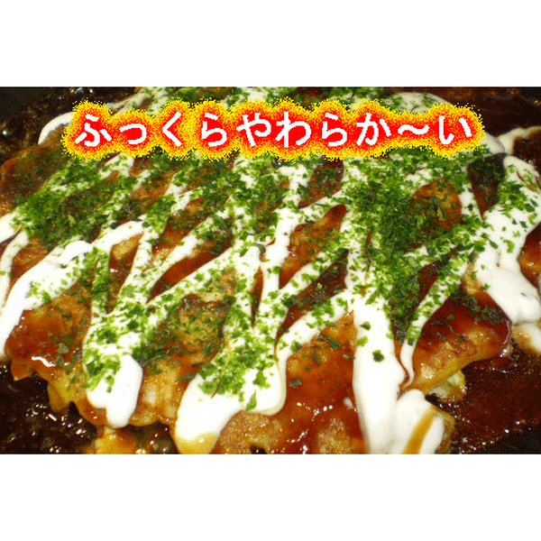
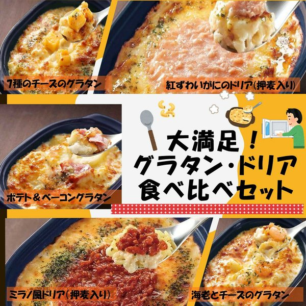
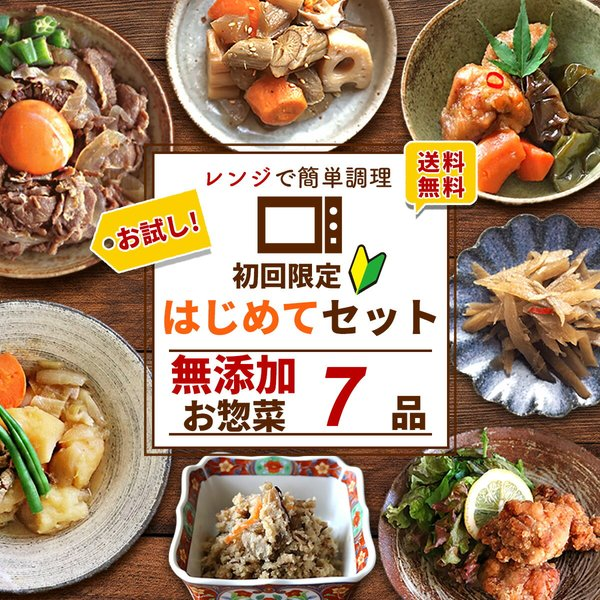
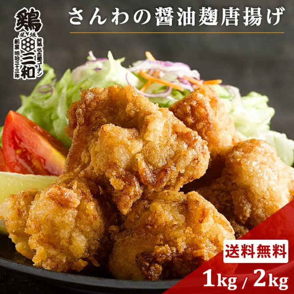

【2026年最新】忙しい日の最強ストック！レンジ・湯せんで絶品の冷凍おかず・餃子・ハンバーグ・牛めし・パスタソースお取り寄せ10選
共働きで平日の夕食を作る時間が取れない日は、週に2〜3日あります。そこで効くのが、冷凍庫に主菜をストックしておくことです。レンジか湯せんで温めるだけで、買い物にも調理にも時間をかけずに食事が完成します。
選ぶ軸は、1食分ずつ分かれているか、温めるだけで出せるか、そして冷凍庫に収まるかです。餃子やお好み焼きは袋単位で使い切れて、焼くだけ・温めるだけで主菜になります。ハンバーグや牛めしの具は1個ずつ個包装なので、食べる分だけ取り出せます。パスタソースと冷凍パスタは、麺をゆでるか温めるだけで1食になり、ソースを別に買う必要がありません。冷凍弁当と無添加のお惣菜は、主菜と副菜をまとめて補えるので、栄養の偏りが気になる日に向いています。買うときは、1袋あたりの食数と賞味期限を確認し、2週間で食べ切れる量から始めてください。
本記事では、楽天市場で人気・高評価の冷凍ストックおかず10選を、実売価格とレビュー評価つきで写真付き紹介します。
- おすすめ10選 スペック・特徴比較表
- BEST 1｜冷凍餃子 2種96個セット（にんにく黒餃子48個・あっさり本餃子48個）
- BEST 2｜格之進 金格 ハンバーグ 5個セット（国産牛・白金豚・無添加）
- BEST 3｜松屋 牛めしの具（プレミアム仕様）10個セット
- BEST 4｜洋麺屋ピエトロ 冷凍パスタ 6食セット（11種類から選べる）
- BEST 5｜森のパスタソース お試しセット（1人前×8種類）
- BEST 6｜選べる カロリー・塩分調整食 10食セット（冷凍弁当）
- BEST 7｜関西風お好み焼き 選べる10食セット（冷凍）
- BEST 8｜冷凍 グラタン・ドリア 食べ比べ5種×2個セット
- BEST 9｜無添加 冷凍お惣菜 7種類セット（温めるだけ）
- BEST 10｜さんわ 醤油麹唐揚げ 1kg（レンジで簡単調理）
- 【読者負担0円】買わなくても得する無料サービス
- まとめ：冷凍ストックおかず10選の選び方
| 順位 | 商品名 | ブランド | 最大の特徴・おすすめ理由 | 総合評価 |
|---|---|---|---|---|
| BEST 1 | 冷凍餃子 2種96個セット（にんにく黒餃子48個・あっさり本餃子48個） | 餃子館 | 2種類を48個ずつ計96個 | 4.49 |
| BEST 2 | 格之進 金格 ハンバーグ 5個セット（国産牛・白金豚・無添加） | 格之進 | 国産牛と白金豚の合いびき | 4.74 |
| BEST 3 | 松屋 牛めしの具（プレミアム仕様）10個セット | 松屋 | 1食分×10個の個包装 | 4.63 |
| BEST 4 | 洋麺屋ピエトロ 冷凍パスタ 6食セット（11種類から選べる） | ピエトロ | 11種類から6食を選べる | 4.81 |
| BEST 5 | 森のパスタソース お試しセット（1人前×8種類） | きのこ屋 | 8種類を1人前ずつ試せる | 4.53 |
| BEST 6 | 選べる カロリー・塩分調整食 10食セット（冷凍弁当） | 冷凍弁当 専門店 | カロリー・塩分を調整済み | 4.68 |
| BEST 7 | 関西風お好み焼き 選べる10食セット（冷凍） | お好み焼き 専門店 | 10食分のまとめ買い | 4.76 |
| BEST 8 | 冷凍 グラタン・ドリア 食べ比べ5種×2個セット | 冷凍食品 専門店 | 5種類×2個の食べ比べ | 4.73 |
| BEST 9 | 無添加 冷凍お惣菜 7種類セット（温めるだけ） | おかわりくん | 7種類の副菜が揃う | 4.51 |
| BEST 10 | さんわ 醤油麹唐揚げ 1kg（レンジで簡単調理） | さんわ（鶏三和） | 1kgの大容量 | 4.57 |
冷凍餃子 2種96個セット（にんにく黒餃子48個・あっさり本餃子48個）

にんにくの効いた黒餃子と、あっさりした本餃子を48個ずつ、計96個まとめたセット。1袋12個入りなので、2人なら1袋で1食、家族なら2袋で十分です。焼くだけで主菜になるため、買い物に行けない日でも食事が成り立ちます。味が2種類あるので、週の半ばで飽きずに食べ切れます。楽天市場での実売価格は約5,360円（2026年11月時点）。
- 2種類を48個ずつ計96個
- 12個入りで使い切りやすい
- レビュー17,509件・評価4.49
- 冷凍庫の容量が小さいと、96個は場所を取る
格之進 金格 ハンバーグ 5個セット（国産牛・白金豚・無添加）

国産牛と白金豚を合わせた冷凍ハンバーグ5個セット。添加物を抑えた味付けで、肉の旨みが前に出ます。湯せんかフライパンで温めるだけで、デミグラスソースをかけずとも食べられる味です。1個が大きめなので、2人なら1個を半分に切って副菜を足せば夕食になります。楽天市場での実売価格は約4,970円（2026年11月時点）。
- 国産牛と白金豚の合いびき
- 無添加で子どもにも出しやすい
- レビュー4,265件・評価4.74
- 1個が大きいので、解凍に時間をかける
松屋 牛めしの具（プレミアム仕様）10個セット

松屋の牛めしの具を、1食分ずつ10個に分けたセット。温めてご飯にのせるだけで、あの牛めしが家で完成します。1個あたりが手頃で、夜食や休日の昼にちょうどいい量です。玉ねぎと牛肉がしっかり入り、汁も入っているので、ご飯に染み込ませて食べられます。楽天市場での実売価格は約3,680円（2026年11月時点）。
- 1食分×10個の個包装
- 温めてご飯にのせるだけ
- レビュー1,207件・評価4.63
- 汁気が多いので、温めるときは器に移す
洋麺屋ピエトロ 冷凍パスタ 6食セット（11種類から選べる）

洋麺屋ピエトロの冷凍パスタを、11種類から6食選べるセット。独自製法で、レンジで温めても麺がアルデンテに仕上がります。ソースは別添えなので、麺と和える加減を自分で調整できます。忙しい日の昼に、レンジだけでレストランの味が出せるのは、冷凍庫にあると安心な存在です。楽天市場での実売価格は約5,052円（2026年11月時点）。
- 11種類から6食を選べる
- レンジ加熱でアルデンテ
- レビュー552件・評価4.81
- 温め時間が機種で変わるので、表示を確認する
森のパスタソース お試しセット（1人前×8種類）

きのこ屋が作るパスタソースを、8種類1人前ずつ試せるセット。きのこを使った和風系から、明太子やボロネーゼまで味が分かれているので、家族で好みを比べられます。レトルトなので、ゆでたパスタに和えるだけで1食になります。8種類あると、週に1〜2回パスタを食べる家でも1ヶ月ほど持ちます。楽天市場での実売価格は約3,400円（2026年11月時点）。
- 8種類を1人前ずつ試せる
- 和えるだけで1食になる
- レビュー273件・評価4.53
- 1人前ずつなので、大食いの人は2袋使う
選べる カロリー・塩分調整食 10食セット（冷凍弁当）

カロリーと塩分を調整した冷凍弁当を10食分。主菜と副菜がセットになっていて、レンジで温めるだけで栄養の偏りを補えます。肉・魚・和洋と種類を選べるので、毎日同じ味にならずに済みます。共働きで夕食を作る時間がない日でも、これ1つで食事が整うのは大きいです。楽天市場での実売価格は約5,980円（2026年11月時点）。
- カロリー・塩分を調整済み
- 10食セットで1〜2週間分
- レビュー4,932件・評価4.68
- 味付けは薄めなので、濃い味が好みだと物足りない
関西風お好み焼き 選べる10食セット（冷凍）

関西風のお好み焼きを10食分まとめたセット。具が入った状態で冷凍されているので、フライパンかレンジで温めるだけで食べられます。ソースと青のり、かつお節が付いていれば、家にある調味料を足す必要がありません。キャベツが入ってしっかりした厚みがあり、1枚で満足できる大きさです。楽天市場での実売価格は約5,980円（2026年11月時点）。
- 10食分のまとめ買い
- 温めるだけで食べられる
- レビュー210件・評価4.76
- フライパンで温めると、片面ずつ時間がかかる
冷凍 グラタン・ドリア 食べ比べ5種×2個セット

5種類のグラタンとドリアを2個ずつ、計10個まとめたセット。チーズ系から和風まで味が分かれ、1個ずつアルミ皿に入っているので、そのままトースターで焼けます。子どもが帰宅してから「小腹が空いた」という時間にも、焼くだけで1品出せます。ホワイトソースが濃厚で、寒い日の夕食の主菜にもなります。楽天市場での実売価格は約3,880円（2026年11月時点）。
- 5種類×2個の食べ比べ
- アルミ皿のまま焼ける
- レビュー82件・評価4.73
- トースターの庫内が狭いと、一度に2個は入らない
無添加 冷凍お惣菜 7種類セット（温めるだけ）

無添加の冷凍お惣菜を7種類詰めたセット。ひじきの煮物や切り干し大根など、家で作ると手間のかかる副菜が中心です。温めるだけで食卓に出せるので、主菜を作っている間に副菜が揃います。添加物を抑えているため、子どもの食事にもそのまま出せます。楽天市場での実売価格は約3,280円（2026年11月時点）。
- 7種類の副菜が揃う
- 無添加で子どもにも出せる
- レビュー1,860件・評価4.51
- 和風の味付けが中心なので、洋食の日は合いにくい
さんわ 醤油麹唐揚げ 1kg（レンジで簡単調理）

創業明治33年の鶏肉専門店が作る、醤油麹の唐揚げ。1kg入りで、レンジで温めるだけで食べられます。醤油麹の効果で肉が柔らかく、揚げ直さなくても衣がしっとりしています。1kgあると、弁当のおかずと夕食の主菜に分けて使え、小分けにして冷凍しておけば1ヶ月ほどもちます。楽天市場での実売価格は約3,520円（2026年11月時点）。
- 1kgの大容量
- レンジで温めるだけ
- レビュー446件・評価4.57
- 温めすぎると衣の食感が落ちるので、短めに温める
この記事の商品を買う前に、まずは無料で得する選択肢をチェック。どれも登録・利用は0円で、無料期間中に解約すれば料金はかかりません。読みたい雑誌がある人、ポイントを貯めたい人、アンケートなら気軽という人、それぞれに合うものを選べます。
初回31日無料・無料期間中に解約すれば0円 → 楽天ポイントモール｜登録無料で毎日ポイ活
買い物なしでもポイントが貯まる無料サービス → 楽天インサイト｜アンケートに答えてポイント
登録無料・すきま時間のアンケートで貯まる → 楽天カード｜年会費永年無料
新規発行・年会費ずっと0円 →
4つのサービスの違いと使い分けは「出費0円で得する！買わずにポイントが貯まる無料サービス厳選4選」でまとめています。
💡 まとめ：冷凍ストックおかず10選の選び方
冷凍ストックは、買う量より使い切れる量を優先してください。まず餃子かお好み焼きを1袋、ハンバーグか牛めしを1セット入れておけば、疲れた日の夕食はほぼ解決します。パスタソースと冷凍パスタは、昼食にも使えるので回転が速く、賞味期限が残りやすいです。冷凍弁当と無添加のお惣菜は、料理をする気力がない日の「栄養の底上げ」として、主菜のストックとは別に置いておくと役立ちます。冷凍庫は詰めすぎると冷気が回らず、味が落ちるので、7割程度に留めるのが目安です。買い足す前に在庫を確認し、1ヶ月で食べ切れる量を保つと、無駄なく回せます。
楽天市場では「5と0のつく日」や「お買い物マラソン」などのキャンペーンに合わせて購入すると、ポイント還元が最大化してお得に手に入ります。ぜひチェックしてみてくださいね。